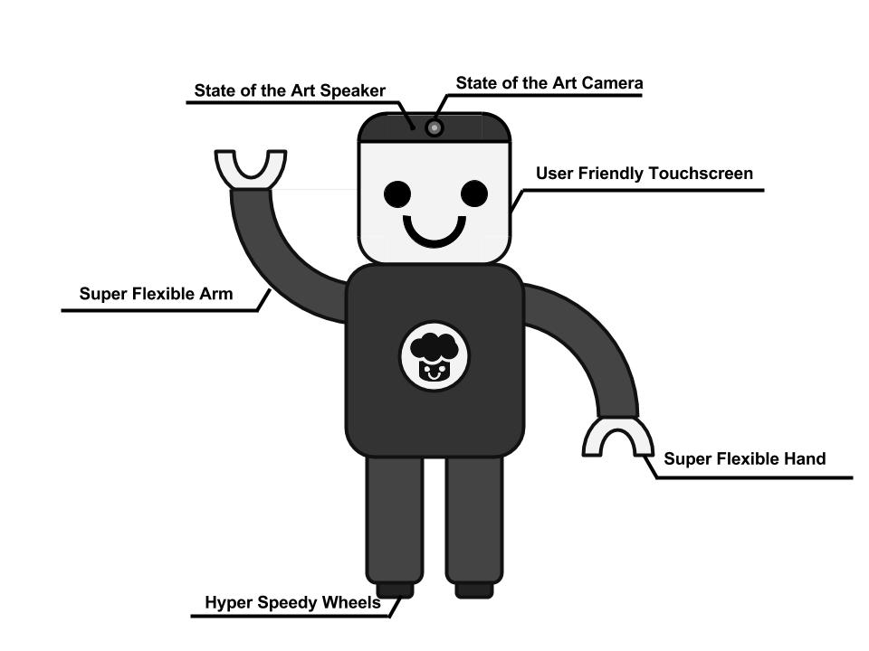

About CHEFMAX
CHEFMAX is a cooking robot that cooks! First you can choose which recipe you want it to make. There are thousands of recipies already loaded on the robot and you can add more. Then the chefmax will order all the needed ingriedients from your favorite stores such as amazon, whole foods, and Safeway. Then the Chef robot will prepare and make the dish. And lastly it will serve the homemade meal to you! Down below are the reasons why you should buy CHEFMAX!!!
Link to Homepage
Link to Market Analysis
Link to Finance Budget

- It is very cheap, considering you can use it for a lifetime
- It can cook for you when it gets hard for you to move around
- It will self update new recipies and recommand you to new popular dishes that chafmax thinks you will like
- It has a easy to access touch screen
Here are some cool facts about Chefmax!!
- It only costs $2999
- The origin of the name is Baymax
- It is not only for cooking, he can be also used as a companion to talk with when you are bored or frustrated
- It is also the newest, most hightech cooking robot!
- Whoever made ChefMax's name must be genius!!!
- GO CHEFMAX!!!!!!